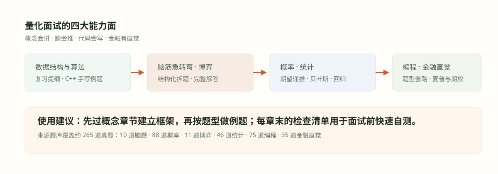

#001. 如何使用这本量化面试题解手册

#这本手册解决什么问题
量化面试的准备材料通常有两种：一种是纯题库，按公司或按年份罗列题目，答案零散；一种是教科书，体系完整但离面试题很远。这本手册试图站在中间：以一份约 265 道真题的通用练习题库为底稿，把题目按知识点而不是按出现顺序重组，每一章先把这个知识点讲透，再把落在它上面的原题逐道解完。
这样组织的理由很直接：面试官很少原题重考，但知识点的重复率接近百分之百。掷硬币等第一个正面、等 HH、等 HHHH 表面上是三道题，实际是同一个「序列等待」工具的三个难度档；最大子数组、最大子数组和等于 K、最短含 K 个唯一值子数组是同一个「窗口/前缀和」思想的三种问法。会一道题只能应付一道题，会一个工具就能应付一个家族。
每个板块先讲清楚工具箱里有什么：期望递推、贝叶斯更新、指示变量、Kadane、滑动窗口……以及每个工具的适用信号。
每道例题都有建模、关键步骤和数值结果，不止给答案；重点是「为什么下一步这么走」。
每章末尾的误区与追问小节，模拟面试官的 follow-up：换个条件、换个问法，你的结论哪里要变。
#题库的七大板块与重组方式
源题库分为七个板块，题量分布很不均匀：概率一个板块就占了约三分之一，编程占近三成。手册保留了板块边界，但按知识点密度重新切章——概率拆成十章，博弈合并为两章，数据结构与算法的复习提纲扩写成九章并配上 C++ 实现。下表是完整的映射关系，你可以直接把它当目录索引用。
| 板块 | 源题量 | 对应章节 | 重组逻辑 |
|---|---|---|---|
| 数据结构与算法 | 提纲 27 项 | 002–010 | 提纲逐项讲透，每项配手写例题与复杂度 |
| 脑筋急转弯 | 10 道 | 011–013 | 按「信息约束、估算数论、编码博弈」三类拆题框架重组 |
| 概率 | 88 道 | 014–023 | 按工具分十类：递推、序列等待、骰子、硬币、贝叶斯、检验、对称、指示变量、过程、杂题 |
| 博弈论 | 11 道 | 024–025 | 单局估值与逆向归纳一章，破产与下注尺度一章 |
| 统计与数学 | 46 道 | 026–030 | 回归两章、估计一章、高斯与相关一章、杂题费米一章 |
| 编程 | 75 道 | 031–036 | 按模板收敛：DP 两章、窗口、字符串栈、二分数学、设计 |
| 金融直觉 | 35 道 | 037–040 | 夏普、期权、微观结构、组合与回测各一章 |
每个板块的开头一章都有一张知识地图（SVG 导图），先看图再读正文，能更快建立定位感。章节之间有交叉引用：比如「掷硬币猜涨跌游戏」的期望与方差属于概率工具，但「两年后亏钱概率」的口径在037 章夏普比率处还会再出现一次，两处互链。
#推荐书单与难度阶梯
源题库在开头给了一份推荐阅读，这里按「先用哪本」重新排一下序，并标注各自覆盖手册的哪些章节：
入门第一本：《A Practical Guide to Quantitative Finance Interviews》（Xinfeng Zhou，绿皮书）。题路与本手册最接近，概率与随机过程部分对应 014–023 章，建议与手册同步读。
刷题第二本：《Heard on the Street》（Timothy Crack）。题量更大、更偏古典，脑筋急转弯与概率题的变式来源，对应 011–013 章和概率后半部分。
编程参考：《Cracking the Coding Interview》。数据结构与算法提纲的展开版，对应 002–010 章；C++ 实现细节以手册为准。
统计进阶：《Elements of Statistical Learning》（ESL）。回归、正则化、模型选择章节的深挖来源，对应 026–027 章；啃不动可先换《Introduction to Statistical Learning》或《All of Statistics》。
交易方向：《Quantitative Financial Economics》（Cuthbertson）与《Statistical Arbitrage》。若面试偏统计套利或执行，配合 039–040 章使用。
这份书单不必读完。经验上「绿皮书 + 手册概率十章 + 一本编程书」已覆盖大多数量化研究员面试的第一轮；ESL 和微观结构类书留给终面或特定团队。
站内同专题材料：本手册与《小红书量化面试题库 3–54：52 道题的完整推导与面试方法》同属「量化面试」专题。那份题解按题目逐一独立推导、偏证明细节；本手册按知识点重组、偏体系与训练路径。建议先用本手册建立框架，再用那 52 道题做独立练习检验——两份材料的推导风格不同，互相对照能暴露理解上的盲点。
#三条学习路径
不同背景的人应该按不同顺序用这本手册。给自己选一条主线，避免从头到尾平推——统计背景的人不需要在数据结构上花与概率同样的时间，反之亦然。
顺读 002–040。适合准备周期超过一个月、基础平均的情况；每章读完立即做例题，不要只看解答。
先吃透 014–023 十章（88 道源题），再回头补 002–010 与 031–036；金融直觉放最后串联。适合两周内的面试冲刺。
只读每章的「误区与边界」和「检查清单」，配合 037–040 的金融问答热身；把 014、015、018 三章的例题重做一遍。
自测节奏建议：每天一个板块的一到两章，先遮住解答自己做例题，能独立完成超过七成才算过关；不过关的章记下来，三天后重做。面试前一晚只看记下来的章。
#例题详解长什么样
手册里所有例题都按统一格式呈现：题面（改写得更清晰）→ 建模 → 推导 → 结果 → 面试怎么讲。这里用一道最小的题演示这个格式，它同时也是概率主线的第一道例题的预告。
例题 0（格式演示）：掷一枚公平硬币，平均要掷多少次才能得到第一个正面？
建模。设 \(E\) 为得到第一个正面所需的期望次数。每一次掷硬币有两种结局：以概率 \(\tfrac12\) 直接出现正面，用掉 1 次；以概率 \(\tfrac12\) 出现反面，同样用掉 1 次，但之后的过程与重新开始完全一样，期望仍为 \(E\)。
推导。按第一次的结果分解（first-step analysis）：
解得 \(E=2\)。
检验。这与几何分布的通用结论一致：成功概率为 \(p\) 的试验，首次成功的期望等待次数是 \(\tfrac{1}{p}\)；代入 \(p=\tfrac12\) 得 2。量级也合理——期望次数应该在 1 和「很多次」之间。
面试怎么讲。先说「这是几何分布，期望 \(\tfrac1p\)」，再当场把递推式写出来证明你理解推导，最后主动提一句：「如果题目改成等第一个 6，就是 \(p=\tfrac16\)、期望 6 次。」——主动给出变式是面试的加分习惯。
这个「建模 → 推导 → 检验 → 面试怎么讲」的四段式会贯穿全手册。检验一步尤其不要省：概率题最容易在「结果超出 \([0,1]\)」「退化情形不对」「量级离谱」上翻车，花十秒钟自查能把大部分粗心错误拦住。
#面试答题的通用框架
不管哪个板块，口头答题都遵循同一个骨架。它把「会不会」转化为「讲不讲得清」，而后者才是面试官的评分对象。
第一步 · 复述与澄清：用自己的话把题目复述一遍，把歧义点问清（「随机」是指均匀吗？「最大期望」还是「最大概率」？）。这一步同时为自己争取思考时间。
第二步 · 识别题型：说出你认为这是哪类题、用什么工具。「这看起来是序列等待问题，我想用期望递推」——即使最后路线错了，结构化的开头也远好于沉默。
第三步 · 小情形试手：先算 \(n=1,2,3\) 的小情形找模式，再推广。编程题先讲暴力解，再优化。
第四步 · 求解并检验：给出结果后立刻自查：边界值、退化情形、量级；能数值验证的就报一个近似数。
第五步 · 主动延伸：指出题目的变式和假设的边界（「若硬币不公平则……」「若允许卖空则……」），把对话引向你熟悉的领域。
#各板块的面试权重与出题形式
准备时间有限时，把力气花在权重高的板块上。下表是量化研究员/交易员面试中各板块的典型出现形式与优先级（以量化研究类岗位为基准，纯开发岗会前移数据结构的权重，纯交易岗会前移金融直觉的权重）。
| 板块 | 典型轮次 | 出题形式 | 优先级 |
|---|---|---|---|
| 概率 | 电话面 + 现场首轮 | 连续口头推导，考官不断追问变式 | 最高 |
| 编程 | 电话面 / 现场上机 | LeetCode 中等难度，限时写出可运行代码 | 最高 |
| 统计 | 现场轮 | 概念辨析 + 小推导，考假设与边界 | 高 |
| 金融直觉 | Hiring manager / 终面 | 开放讨论，考思维框架而非标准答案 | 中 |
| 数据结构与算法 | 编程轮前置 | 概念问答与复杂度分析，少写码 | 中 |
| 脑题与博弈 | 任意轮的开场或收尾 | 五分钟内给出结构化推理 | 中低 |
概率题是唯一贯穿全流程的板块：从 HR 初筛后的第一通电话，到终面见到 partner，每一轮都可能掷一次硬币。更实际的原因是，概率推导完全暴露思维过程——考官能实时看到你在哪一步犹豫、用什么工具补救，这比编程题的「过/不过」信息量大得多。
#高频问题快答
「我没有金融背景，能过量化面试吗？」研究员首轮几乎不考金融知识，考的是概率、统计与编程；金融直觉（037-040 章）可以在最后一周集中补齐口径。
「数学推导总是差最后一步怎么办？」缺的通常不是数学，是检验习惯：把 \(n=1\)、\(n=2\) 的情形代进去算一遍，错在哪一步会立刻暴露。每章的「检验」段落就是这套流程。
「编程题用 Python 还是 C++？」电话面/上机两者皆可，但手写代码轮次 C++ 更能体现内存与复杂度意识；本手册的编程章节统一给 C++ 实现，思路与语言无关。
「题目做过了但面试还是卡？」因为你是「认出了题」而不是「重建了解法」。练习时遮住解答、从建模开始完整讲一遍，讲不下去的地方就是真实盲区。
「两个月的复习计划怎么排？」前四周概率十章 + 编程六章（每天各一章交替），中间两周数据结构与统计，最后一周金融直觉 + 全部检查清单二刷 + 错题重做。
#常见误区与自测清单
一是只看不练：读完解答产生的「会了」是错觉，遮住答案重做才是检验；二是背答案不认题型：面试官换个数字或换个场景就失效，务必把每道题归到工具上；三是忽视口头表达：默算出正确答案但讲不出推导过程，在面试里等于没答，练习时请出声讲。
- 我知道手册七大板块各自对应哪些章节，并为自己选了一条学习路径。
- 我了解每章的结构：学习目标、知识讲解、例题详解、误区边界、检查清单。
- 我能说出例题四段式：建模、推导、检验、面试怎么讲。
- 我会用几何分布期望 \(\tfrac1p\) 解决「等第一个成功」类问题，并当场写出递推式。
- 我给自己定了自测节奏：例题先遮住解答做，三天后重做不过关的章。